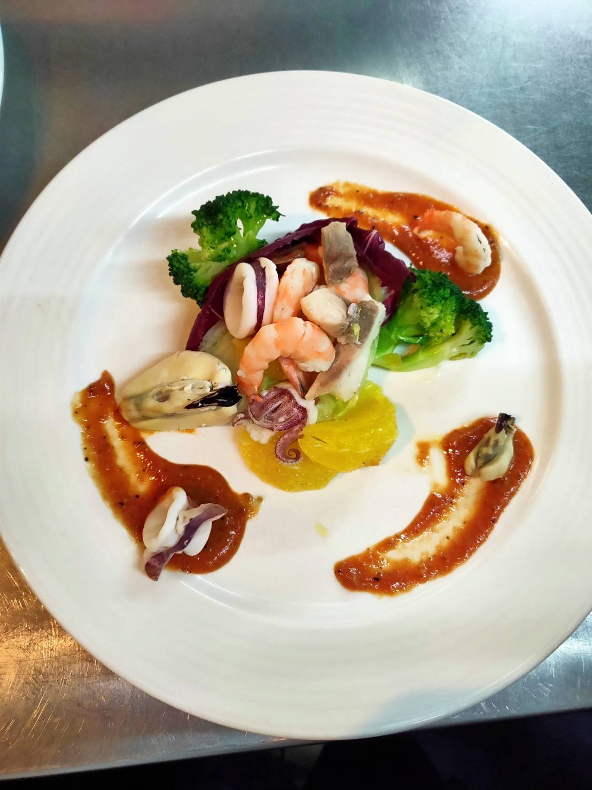

製作方法:
煮橙香60g，清水*1，糖1.5匙，地瓜削皮皮對半切丟進去（約20分）放入橙皮，
加少許鹽生菜洗淨剝片泡水，（爆香：切蔥花，薑切末，蒜切末，洋蔥切末，蔬菜：
青花菜切花）
（鋼盆：絞肉，蔥，紅k切末）（醃製：紅酒半匙，辣醬油1小匙，
雞蛋半顆，太白粉半匙，麵粉半匙，少許鮮味露，快速拌勻，分4份），
煮水燙海鮮（調味：黑胡椒粒*壓碎，月桂葉*烤過，白里香）（約10分撈起雜物），
炒洋蔥，蒜頭，薑，蔥，（稍微上色）紅酒半匙，收汁關火，放冷加入絞肉拌勻，蓋起，
小卷切塊，鯛魚切塊（1指寬）蝦子去腸泥，牡蠣洗淨去殼，（煮魚，所有海鮮
（除牡蠣），起鍋前才加）煮熟完泡水，蝦子煮熟去殼，（小碗：黑胡椒適量，鹽少許，
辣油少許，梅林0.5，白蘭地0.5，番茄醬3大匙，辣根醬一匙，橄欖油0.5匙，拌勻）青花菜燙熟，淋橄欖油，切十字地瓜表面撒糖

德克薩斯豬排 佐特製風味醬
羅西尼漢堡排
大蒜湯
心得